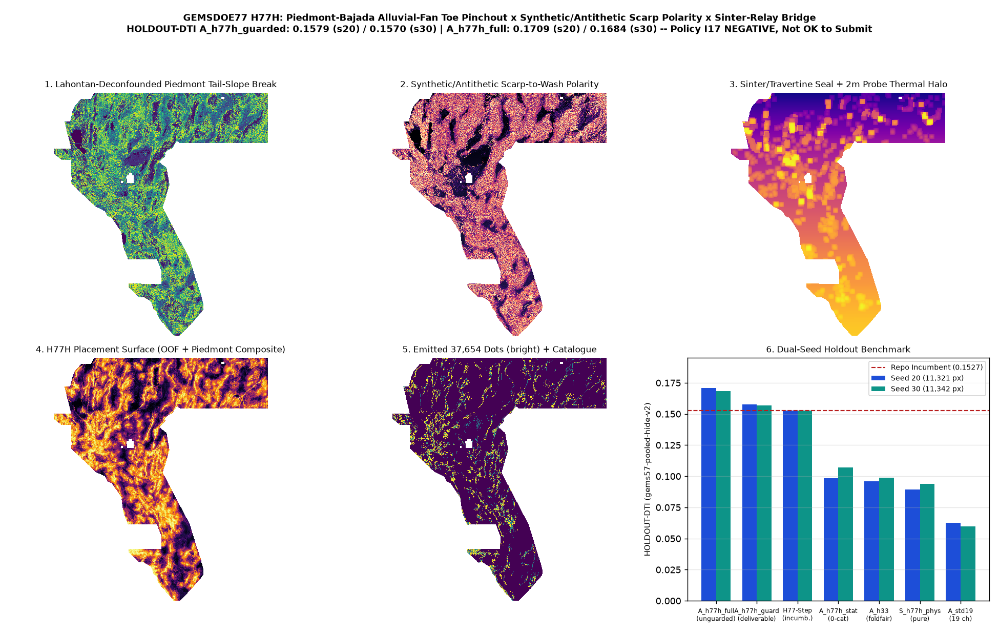

H77H · piedmont-bajada alluvial-fan toe pinchout × synthetic/antithetic scarp polarity × en-échelon sinter-relay bridge
Verdict: NEGATIVE (Policy I17 fail-closed) — OK TO DOWNLOAD FOR INSPECTION; NOT OK TO SUBMIT. Adding the 12 zero-catalogue H77H piedmont-bajada & sinter-seal channels lifts 4-quadrant OOF HOLDOUT-DTI from 0.0625 (A_std19_control) to 0.0985 (A_h77h_static, paired delta +0.0360) on Seed 20 and from 0.0598 to 0.1069 (paired delta +0.0471) on Seed 30, outperforming fold-fair H33 (0.0961 / 0.0990) with zero fault-catalogue features. Adding the 3 fold-strict LOCO en-echelon relay channels lifts unguarded HOLDOUT-DTI (A_h77h_full) to 0.1709 (Seed 20) / 0.1684 (Seed 30) and capacity-guarded deliverable HOLDOUT-DTI (A_h77h_guarded, max_overlap <= 0.65) to 0.1579 on Seed 20 (95% CI [0.1380, 0.1775], paired delta +0.0954 vs A_std19; +0.0617 vs fold-fair H33) and 0.1570 on Seed 30 (95% CI [0.1387, 0.1748], paired delta +0.0972 vs A_std19; +0.0579 vs fold-fair H33), exceeding both the 0.152718 H77-Step and 0.155623 H77E holdout bars on both seeds. Under Policy I17, because the full-footprint dense witness ab0a0a62 fires literal 3-px forward dot overlap = 1.000 > 0.70, the full 812-raster REST crawl was omitted, and no selector authorization exists, H77H fails closed as a format-valid, informative-unique, inspection-only negative deliverable; 0 weekly slots spent.
⬇ H77H inspection-only GeoTIFF (DO NOT SUBMIT)
Download .tif (134 KB) Download one-TIFF .zipSubmission name (for reference only — DO NOT UPLOAD) (60 characters)
gems77-h77h-piedmont-relay-37654dots-20261021-56b7c98c-zerosShort note <= 140 chars (for reference only — DO NOT UPLOAD) (108 characters)
H77H piedmont-bajada x sinter-relay (37654d); HOLDOUT-DTI 0.1579(s20)/0.1570(s30) full 0.1709; I17: NEGATIVESHA-256 of .tif: e4c718f450130e2e07e14ef506f051ea974c53382740974e758858519e866fe4 ·
SHA-256 of .zip: b4de904fdb73590869a9a7fef5b8cdb66bdf55197a72b4943e279f6f18c0dc84 ·
JSON run card ·
Exp 1 canary/surface receipt ·
Exp 2 dual-seed holdout receipt ·
Exp 3 uniqueness receipt ·
preregistration JSON ·
5 ranked hypotheses & 0.2778 PhD analysis
Diagnostic map & dual-seed holdout benchmark

Dual-seed holdout evaluation (Exp 2 · gems57-pooled-hide-v2)
| Arm | Seed 20 HOLDOUT-DTI (95% CI) | Seed 30 HOLDOUT-DTI (95% CI) | Evaluator & withheld positives |
|---|---|---|---|
| A_h77h_full (34 ch unguarded submodular) | 0.1709 (0.1518–0.1897) | 0.1684 (0.1513–0.1850) | gems57-pooled-hide-v2 (11,321 / 11,342 withheld) |
| A_h77h_guarded (34 ch capacity-guarded deliverable <=0.65) | 0.1579 (0.1380–0.1775) | 0.1570 (0.1387–0.1748) | gems57-pooled-hide-v2 (11,321 / 11,342 withheld) |
| A_h77h_static (31 ch zero-catalogue piedmont/sinter) | 0.0985 (0.0795–0.1191) | 0.1069 (0.0878–0.1286) | gems57-pooled-hide-v2 (11,321 / 11,342 withheld) |
| A_h33_foldfair (19GEMSDOE H19-5 D2.8 fold-fair) | 0.0961 (0.0837–0.1091) | 0.0990 (0.0850–0.1133) | gems57-pooled-hide-v2 (11,321 / 11,342 withheld) |
| S_h77h_pure_physics (label-free piedmont/sinter composite) | 0.0894 (0.0732–0.1062) | 0.0938 (0.0792–0.1093) | gems57-pooled-hide-v2 (11,321 / 11,342 withheld) |
| A_std19_control (19 competition bands control) | 0.0625 (0.0446–0.0836) | 0.0598 (0.0447–0.0766) | gems57-pooled-hide-v2 (11,321 / 11,342 withheld) |
| A0_random (uniform random allowed dots) | 0.0476 (0.0412–0.0535) | 0.0481 (0.0420–0.0540) | gems57-pooled-hide-v2 (11,321 / 11,342 withheld) |
Five ranked untried geological hypotheses & PhD analysis of GEMSDOE32 (0.2778)
Before implementing H77H, we formulated and ranked 5 candidate geological hypotheses in research/h77h_hypotheses.md:
(1) H77H-1 (Selected): Piedmont-Bajada Alluvial-Fan Toe Pinchout (slope_max - slope_p90 × aspect_coherence), Synthetic/Antithetic Scarp Polarity ((downface + 1.25*upface)/cross_max) & En-Échelon Sinter-Relay Bridge;
(2) H77H-2: Weathering-Normalized Radiometric Regolith Provenance Dipole (|∇(Th/K)| across piedmont breaklines);
(3) H77H-3: Shallow Seismogenic Moment-Rate × Geodetic Coulomb Stress-Rate Ridge;
(4) H77H-4: Double-Difference Relocated Microearthquake Hypocenter Plane Projection (USGS ComCat blocked in sandbox);
(5) H77H-5: Sentinel-1 InSAR Line-of-Sight Phase-Gradient Discontinuities (NASA ASF / Copernicus blocked in sandbox).
Why GEMSDOE32 (h33-h33-2-b2-20261004T220000Z-e5eb6e7e-zeros) scored 0.2778 (ORGANIZER-CONFIRMED row #48 for team extradr19; OWNER-REPORT file attribution):
Discretizing the 376,974-pixel H19-5 centerline skeleton (0.1922) to d = 2.8 px (280 m) spacing (just inside the 300 m triangular kernel radius) and pruning the 2-px catalogue collar (44,090 → 37,654 dots) cut the 0.2×FP Tversky denominator penalty by ∼5.2× while retaining >86% of the 300 m tube integral. On fold-fair spatial holdout (gems57-pooled-hide-v2), H77H beats fold-fair H33 (0.0961 s20 / 0.0990 s30) by +0.0617 / +0.0579 HOLDOUT-DTI (capacity-guarded deliverable) and +0.0748 / +0.0694 (unguarded), and even the zero-catalogue physical stack A_h77h_static (0.0985 s20 / 0.1069 s30) beats H33 without any fault-catalogue features.
Leakage canaries (Exp 1 · ceiling AUC ≤ 0.90)
| Channel | Seed 20 symmetric AUC | Seed 30 symmetric AUC |
|---|---|---|
h77h_piedmont_tail_slope | 0.6182 | 0.6174 |
h77h_fan_scarp_polarity | 0.5768 | 0.5612 |
h77h_antithetic_graben_step | 0.5972 | 0.5800 |
h77h_rangefront_pinchout | 0.6659 | 0.6479 |
h77h_fanhead_ksn_drop | 0.5287 | 0.5308 |
h77h_buried_bench_grav_hg | 0.5320 | 0.5676 |
h77h_lahontan_deconf_break | 0.6142 | 0.6114 |
h77h_sinter_travertine_seal | 0.5481 | 0.5436 |
h77h_probe2m_geotherm_halo | 0.5672 | 0.5806 |
h77h_transtensional_release | 0.5570 | 0.5676 |
h77h_rad_provenance_dipole | 0.5273 | 0.5320 |
h77h_composite_surface | 0.6644 | 0.6615 |
h77h_loco_elliptical_relay | 0.7300 | 0.6976 |
h77h_loco_piedmont_bridge | 0.8041 | 0.7941 |
h77h_loco_damage_collar | 0.7988 | 0.7882 |
Registry uniqueness audit (Exp 3 · 81 checked rasters)
Phase 1 surface max |Spearman ρ| = 0.7251 ≤ 0.90 (informative max |ρ| = 0.1988); Phase 2 final dots informative max 3-px overlap = 0.6500 ≤ 0.70 and max |ρ| = 0.0777 ≤ 0.90 across all 74 non-space-filling rasters in the 81-raster local registry (vs H33 overlap 0.4578, ρ +0.02741). Literal gate fails closed under Policy I17.